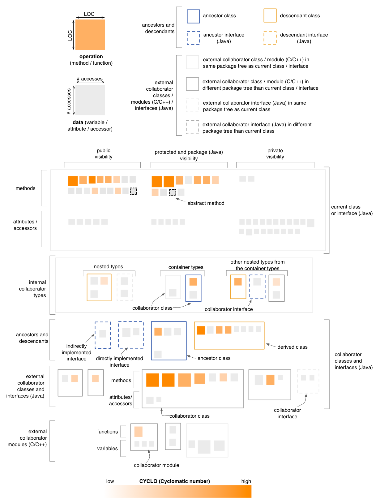

Class Map - Complexity Perspective
The Complexity Perspective of the Class Map
colors all operations in the map, including those belonging to
collaborator classes and modules, based on their CYCLO (Cyclomatic Number) metric values.
This coloring uses a white to orange gradient, with darker shades of
orange for higher CYCLO values.

Entity selection
The user may select an operation or a data in the map, in
which case the selected entity is colored in green. Everything else
remains the same.
Other quality perspectives
Cohesion, Coupling,
Design Flaws, Encapsulation,
Inheritance
Metrics used
CYCLO, DIT
(indirectly), LOC